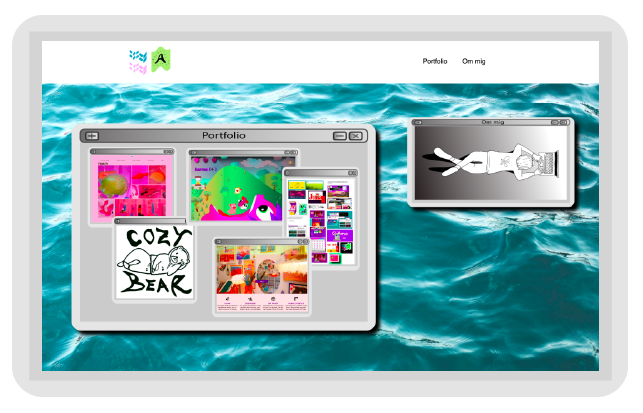
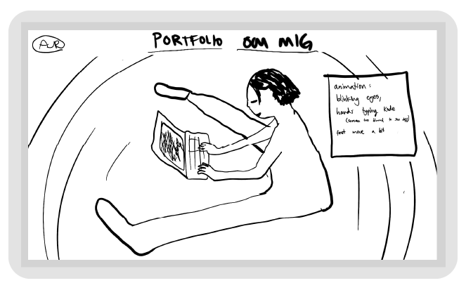
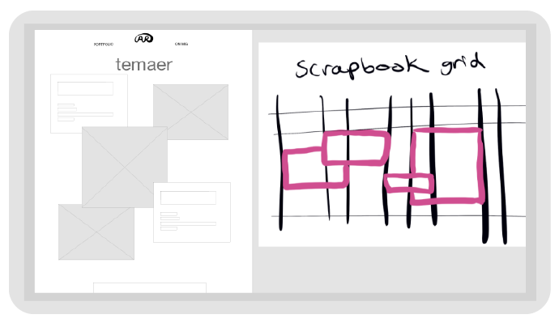
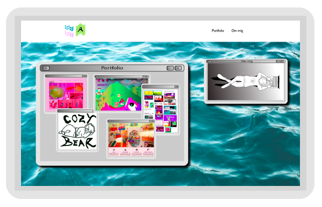
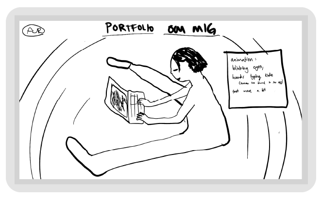
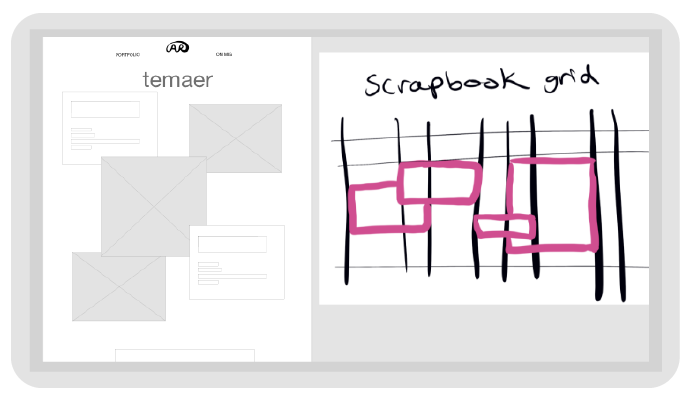

06_Portfolio
Overordnet
Dette projekt har været enormt lærerigt for mig, især i forhold til CSS Grid, opbygningen af et site og design processen. Jeg har fået et nyt perspektiv på semestret ved at samle alt mit indhold i et sted og skabe et overblik over alt materialet. I løbet af denne uge er jeg blevet enormt inspireret af mig selv, fordi når jeg ser hvor meget jeg har lært og skabt siden februar, kan jeg snart ikke vente med at se hvor meget jeg kan udvikle mig fagligt gennem hele uddannelsen og forhåbentligt også en top-up.
Kodning
Jeg startede med at forsøge at lave komplekse grids der ligner en ”scrapbook” og lagde alt for mange classer på hvert element, indtil det gik op for mig at det ikke burde være så besværligt som det jeg havde gang i. Derefter googlede jeg mig frem til en artikel der forklarede om :nth- child, og en hel ny verden åbnede sig pludseligt for mig. Jeg endte dog med at droppe det helt store ”scrapbook” layout efter nogle forsøg på at få det responsivt, men jeg tog den nye viden med mig fra min research. Så snart jeg afprøvede :nth- child, blev jeg inspireret til at skabe mine grids sådan. Jeg udkommenterede alt mit layout CSS og skrev det hele for ny, med den nye metode, fordi jeg gerne ville udfordre mig selv med det nye.
I løbet af ugen har jeg afprøvet enormt mange forskellige stile og layouts, men som jeg har lært på de andre temaer, kommer der et tidspunkt hvor man må tage en beslutning, holde sig til den, og udføre den konsekvent.
Design
Jeg startede designprocessen med at lave masser af research på blandt andet Pinterest og Dribbble, hvorfra jeg skabte et første udkast af mit moodboard. Det første udkast blev mere moderne og minimalistisk, men jeg blev hurtigt mere inspireret af retro design, og skyndte mig at skifte retning. Jeg blev inspireret af Windows95 looket, fordi 90’erne var en tid af digital uskyldighed, og det kan jeg relatere til, som første semesters elev på MMD. Jeg tænkte, at siden websitet alligevel er en skoleopgave, og ikke et forudbestemt produkt til en kunde, kan jeg ligeså godt have det sjovt med at undersøge en stil som jeg ikke har prøvet før. Efter jeg havde sat mig fast på retro stilen, lavede jeg et nyt moodboard der larmede enomt meget. Jeg valgte at lave en fotostil hvor alle billeder har den samme grå baggrund, og hvor de klikbare billeder har skygge og overskrift. Efter nærmere overvejelse landede jeg på mere af en balance mellem den retro windows95 kaos og et mere moderne
look, der ikke gør alt for ondt på øjnene, kun lige nok til at tiltrække opmærksomhed.
Forneden er nogle udklip af diverse designs som jeg overvejede at udføre, men ikke endte med at vælge.
 





User testing
Efter den første version af sitet var nogenlunde færdigt, lavede jeg BERT-test, 5-sek test og user test på den, for at prøve at bekræfte og afkræfte mine hypoteser om brugeroplevelsen. To af de vigtigste fund jeg tog med mig fra usertesten var at min CV side var malplaceret, fordi den på det tidspunkt var på forsiden ved siden af ”om mig” siden, og at mine daværende billede gallerier på side 2, 3 og 4 var forvirrende. Derfor ændrede jeg hover effekten fra at være større til mindre, og fik den samme testperson til at prøve siden igen, hvorefter han sagde at den var blevet mindre distraherende.
I 5-sek testen var en af brugerens førstehåndsindtryk at ”det ligner noget fra gratis spil, men på en behagelig måde”.
Ud fra BERT-testen, fik jeg bekræftet min hypotese om at største delen af brugerne oplever sitet som værende retro/vintage og sjov.
Refleksion
Hvis jeg havde ekstra tid, er der nogle bestemte ting jeg gerne ville have lavet anderledes. Først, ville jeg gerne ændre mine powerpoints på side 2 og 3, så brugeren kan læse hvad der står på alle slides på en desktop uden at skulle åbne powerpointen i en ny fane. Jeg prøvede nogle forskellige løsninger til det, men endte med at vælge at have et ”preview”, så brugeren selv kan vælge om de vil åbne den i en ny fane for at læse alt indholdet. Set i bakspejlet ville jeg hellere have holdt mig til den første ide, men det må blive en anden gang jeg udfører det.
Noget andet jeg gerne ville have haft med, er Javascript der får billederne til at åbne op i fuld skærm når det bliver klikket på. Jeg undersøgte metoden og begyndte at lære koden der kunne give denne effekt, men endte med at prioritere min tid et andet sted.